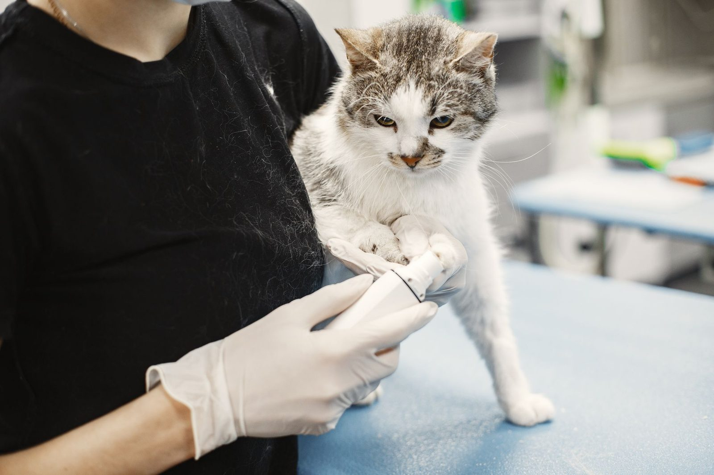

Why this practice exists
I’ve been a vet for nineteen years. I opened Harbor Point in 2016 so I could spend thirty minutes with a patient instead of twelve.
We get down on the floor with the nervous ones, and we call you with results ourselves. Both of those started as complaints about other clinics — here they are simply how the day runs.
Harbor Point Veterinary · Annapolis, Maryland
